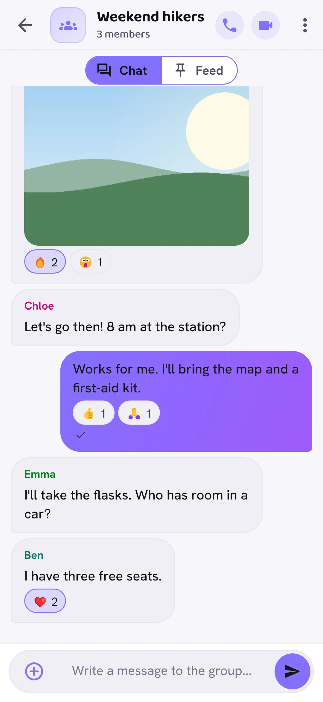
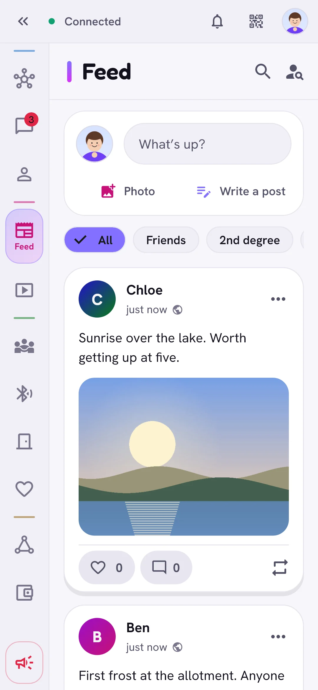
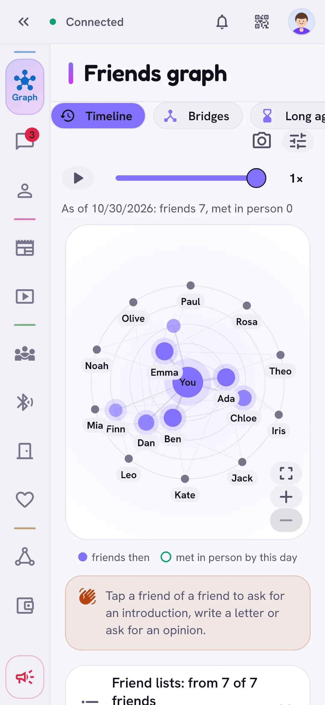
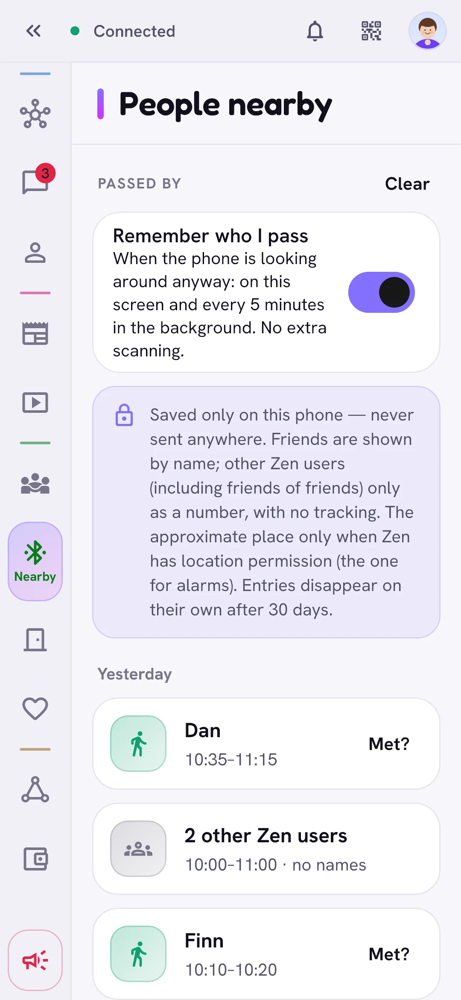
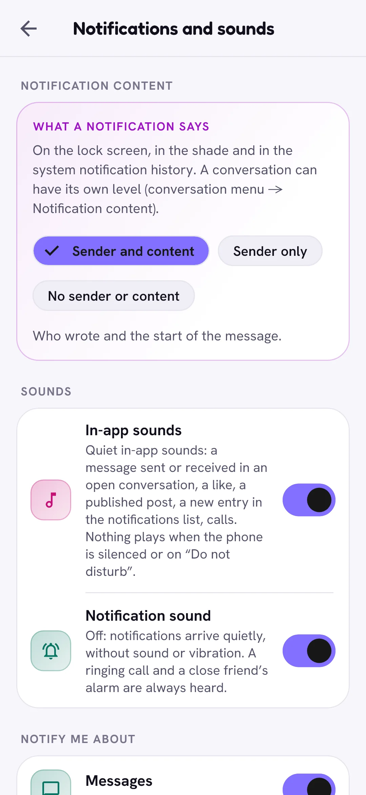
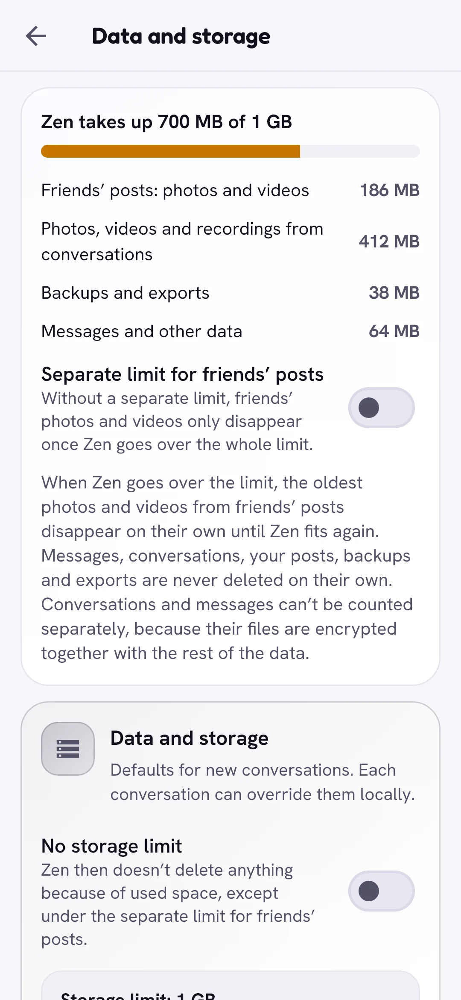
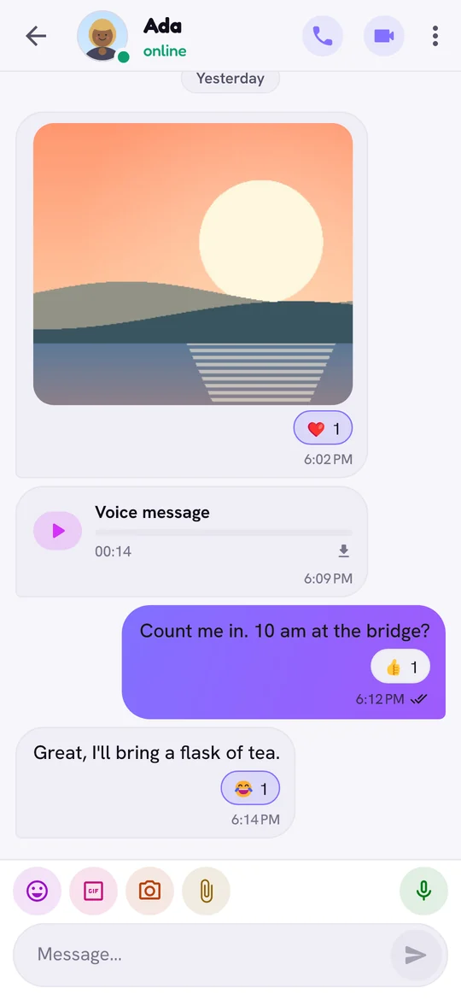
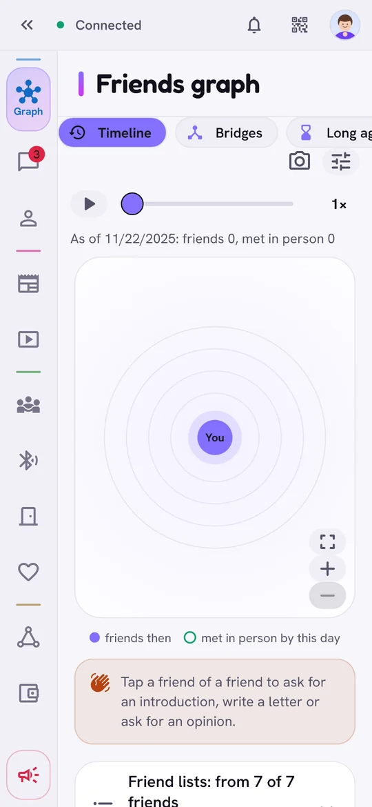

The idea
People who know each other
You add friends by QR code or link, in person or through a friend. No phone number, no e-mail, no account on anyone’s server.
No company in the middle
Messages travel between devices, sealed end to end; the nodes that pass them on cannot read them. When a friend is offline, friends you trust keep sealed mail for them.
No ads, no algorithm
Your feed is your friends’ posts, in order. Free software, made by one person and kept going by voluntary donations.
What you can do
Chats and calls
Private and group chats with photos, videos, files, voice notes and GIFs; audio and video calls with screen sharing.
Delivery while offline
Sealed mail waits with up to six trusted friends’ devices until the recipient is back. Icons show where a message is.
Feed and videos
Posts for the people you choose, ordered on your phone. A public post can reach friends of friends.
Friends and the graph
Friendship levels, a graph of who knows whom, and introductions through mutual friends.
Meeting people
Events, dinner circles, sharing food, “right now” statuses and an alarm for emergencies.
Nearby and neighbours
Friends close by over Bluetooth, and a QR code on your door that rings every phone of the household.
Works without internet
The same Wi-Fi, Wi-Fi Direct and Bluetooth carry chats when there is no connection.
The pyramid
An experiment in shared decisions: small cells of people who know each other, votes and a common wallet, with no headquarters.
Many devices
Android, iPhone, Windows, Mac and Linux; one account on several devices, and several accounts on one.
Looks and languages
27 looks, each light and dark, and 21 languages.
See it in action
Real screens of the app with a made-up demo account, light or dark as your device is set.











In motion


Security
Zen protects what you say and keep, and is honest about its limits.
- End to end: only the people in a chat can read it, and “record now, decrypt later” attacks are covered by the post-quantum layer.
- Locked phone: Android’s background service keeps receiving without your password. It holds only a separate key; what arrives stays sealed until you unlock.
- Gates: reaching people beyond your friends goes through friends who set the terms: free, with consent or for points. Strangers cannot probe whom you know.
- Checked updates: every release is signed; on Android and computers the app checks the signature and the checksums before it updates.
Honestly: Who talks to whom, and when, is visible to the nodes that route traffic and to friends who keep your mail. A few parts are still classical, for example the mesh node key. The security model lists them.
The technology
Open, proven building blocks, put together for people rather than servers.
Yggdrasil
An open, encrypted mesh network. Every device is a node with its own address; there is no central server.
A Go node inside
The network bridge is written in Go and runs on every system.
Post-quantum cryptography
The NIST standards ML-KEM-768 and ML-DSA-65, combined with X25519 and Ed25519.
Flutter
One app for Android, iPhone, Windows, Mac and Linux.
Thanks to Yggdrasil, the open, encrypted mesh network Zen runs on, and SideStore, which installs Zen on an iPhone and keeps it renewed right on the phone.